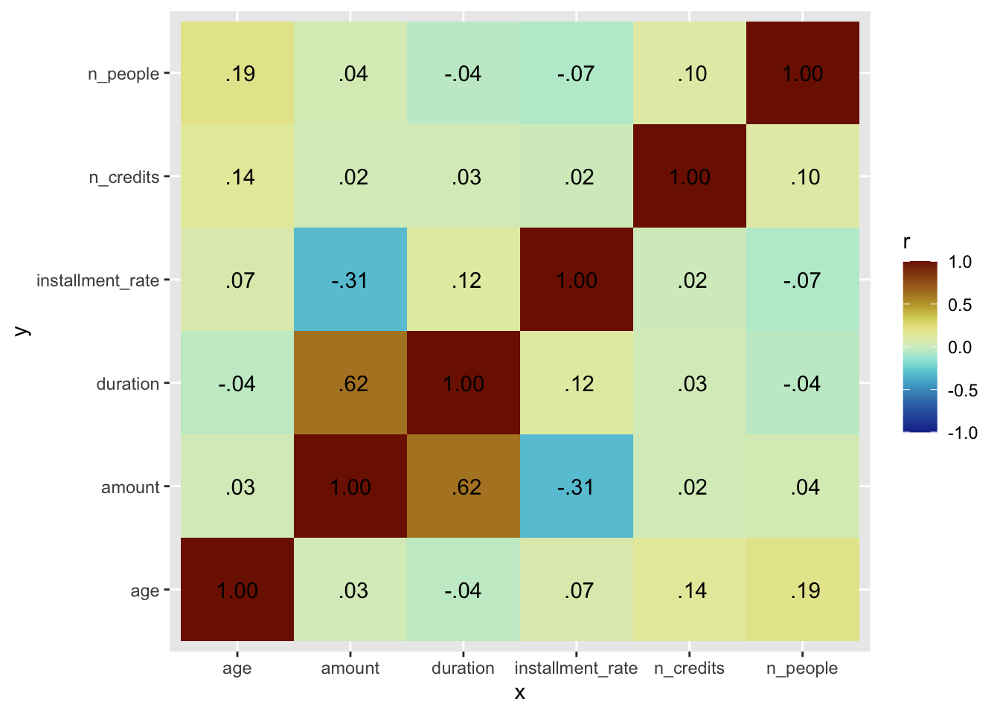
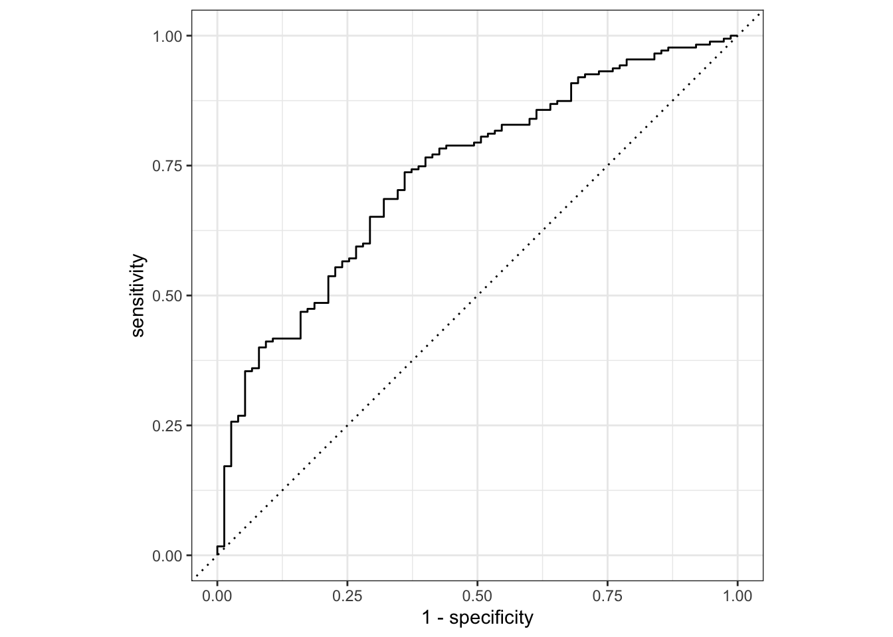
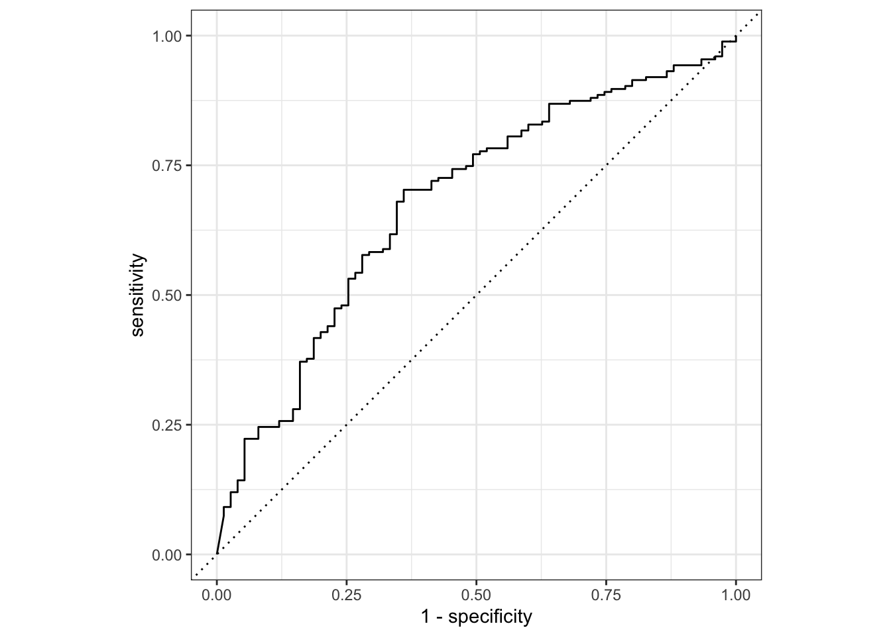
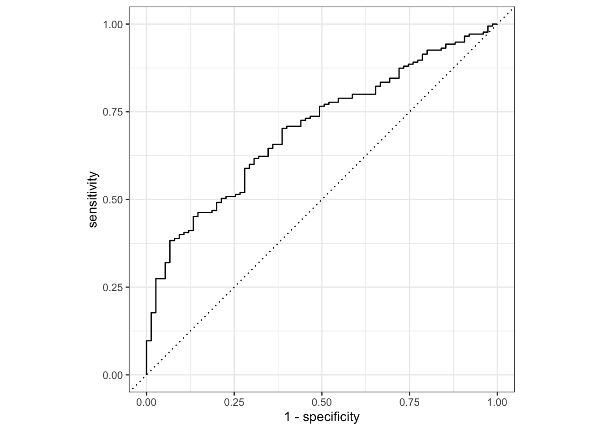
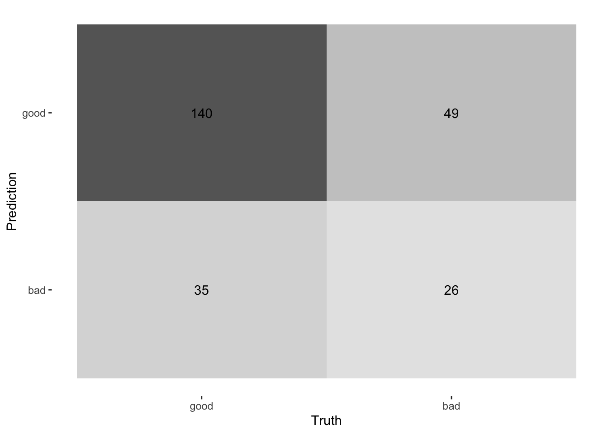
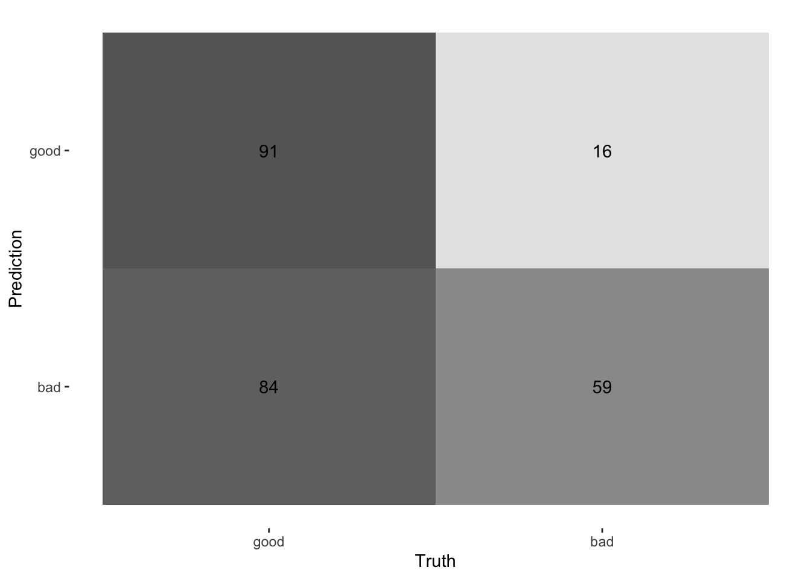
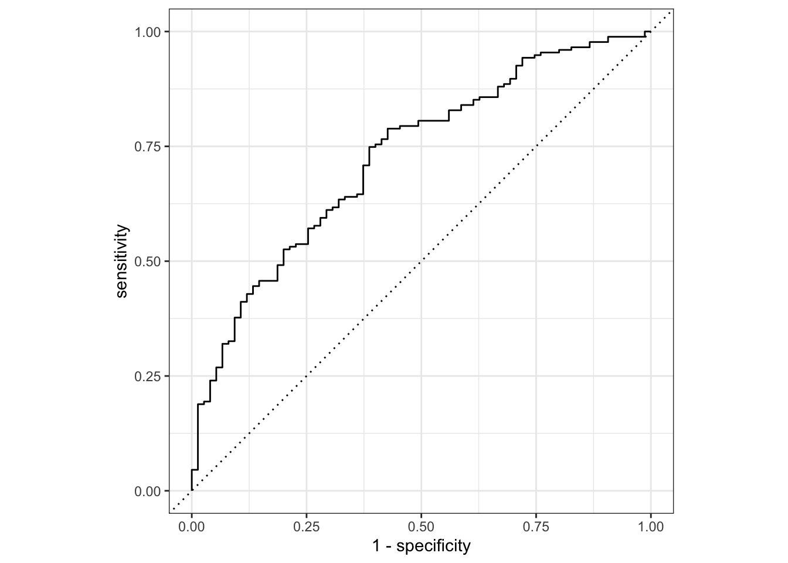
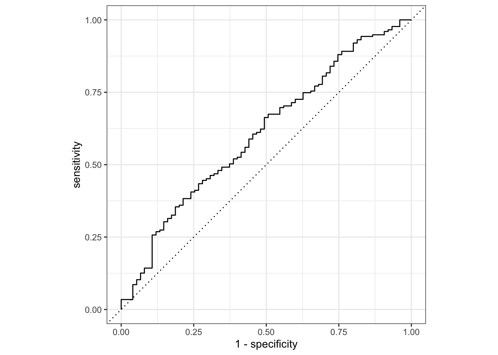
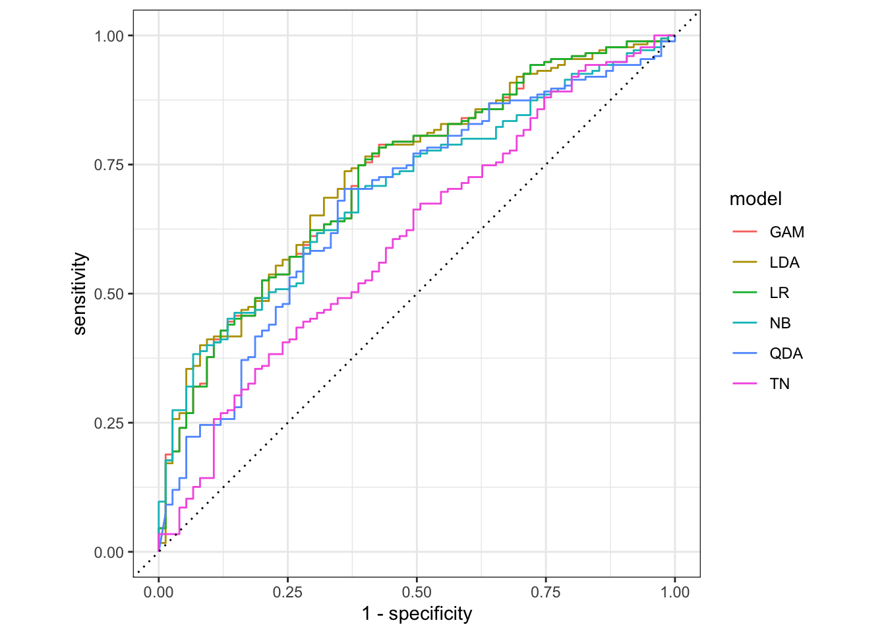

Credit Risk Classification Models
# Package names
packages <- c("tidyverse", "torch", "tabnet", "tidymodels", "mlbench", "discrim", "finetune", "vip", "smotefamily", "ROSE")
# Install packages not yet installed
installed_packages <- packages %in% rownames(installed.packages())
if (any(installed_packages == FALSE)) {
install.packages(packages[!installed_packages])
}
# Packages loading
sapply(packages, require, character = TRUE)## tidyverse torch tabnet tidymodels mlbench discrim
## TRUE TRUE TRUE TRUE TRUE TRUE
## finetune vip smotefamily ROSE
## TRUE TRUE TRUE TRUEset.seed(13383645)
#Reading Data
credit <- read.table("http://archive.ics.uci.edu/ml/machine-learning-databases/statlog/german/german.data")
#Assigning variable names
colnames(credit)=c("chk_acct","duration","credit_his","purpose","amount","saving_acct","present_emp","installment_rate","sex","other_debtor","present_resid","property","age","other_install","housing","n_credits","job","n_people","telephone","foreign","Class")
credit <- credit |>
mutate_at(vars("chk_acct","credit_his","purpose","saving_acct","present_emp","sex","other_debtor","present_resid","property","other_install","housing","job","telephone","foreign","Class"), factor)
#Class is in 1,2 - we need to change it to 1->1, 2->0 for Tabnet
credit$Class <- dplyr::recode_factor(credit$Class, `1` = "good", `2` = "bad")
# credit$Class <- factor(credit$Class, levels = c("good", "bad"))
# credit$credit <- relevel(credit$credit, ref = "good")
# levels(credit$credit)
levels(credit$Class)## [1] "good" "bad"credit <- credit |> as_tibble()
classification_metrics <- metric_set(spec, sens, accuracy, precision, f_meas, kap, mcc)
threshold <- 1./6
counts <- count(credit, Class)
counts[]## # A tibble: 2 × 2
## Class n
## <fct> <int>
## 1 good 700
## 2 bad 300prop.table(table(credit$Class))##
## good bad
## 0.7 0.3library(ROSE)
n_good <- 700
oversampling_result <- ovun.sample(Class ~ .,
data = credit,
method = "over",
N = 1400,
seed = 2018)
oversampling_credit <- oversampling_result$data
table(oversampling_credit$Class)##
## good bad
## 700 700# library(smotefamily)
# X <- credit |> select(-c(Class))
# smote_output = SMOTE(X = X,
# target = credit$Class,
# K = 4)
# oversampled_data = smote_output$data
# table(oversampled_data$Credit)# https://drsimonj.svbtle.com/exploring-correlations-in-r-with-corrr
library(paletteer)
library(corrr)
rs <- credit |>
keep(is.numeric) |>
correlate(method = "spearman", diagonal = 1, quiet = TRUE)
rs |>
stretch() |>
ggplot(aes(x, y, fill = r)) +
geom_tile() +
geom_text(aes(label = as.character(fashion(r)))) +
scale_fill_paletteer_c("scico::roma", limits = c(-1, 1), direction = -1)
0.1 Split into Training and Testing Data Sets
set.seed(123)
# Create data split for train and test
credit_split <- initial_split(all_of(credit),
prop = 0.75, strata = Class)
# Create training data
credit_train <- credit_split %>%
training()
# Create testing data
credit_test <- credit_split %>%
testing()
# Number of rows in train and test dataset
nrow(credit_train)## [1] 750nrow(credit_test)## [1] 2500.2 LDA Classification Model
lda_model_spec <- discrim_linear() |>
set_engine("MASS") |>
set_mode("classification")
lda_model_fit <- lda_model_spec |>
# Fit the model
fit(Class~., data = credit_train)
lda_results <- augment(lda_model_fit, new_data = credit_test)
lda_results <- lda_results |>
select(c("Class",".pred_class",".pred_good",".pred_bad")) |>
mutate(WeightedPred = if_else(as.numeric(lda_results$.pred_bad) > threshold, "bad", "good"))
lda_preds <- credit_test %>%
bind_cols(predict(lda_model_fit, credit_test)) |>
rename(Pred = .pred_class) |>
select(c("Class","Pred")) |>
mutate(WeightedPred = if_else(as.numeric(lda_results$.pred_bad) > threshold, "bad", "good"))
roc_auc(lda_results,
truth = Class,
.pred_good)## # A tibble: 1 × 3
## .metric .estimator .estimate
## <chr> <chr> <dbl>
## 1 roc_auc binary 0.734lda_results %>%
roc_curve(truth = Class, .pred_good) %>%
autoplot()
lda_results %>%
conf_mat(truth = Class, estimate = WeightedPred)## Truth
## Prediction good bad
## good 91 16
## bad 84 59lda_results %>%
conf_mat(truth = Class, estimate = WeightedPred) %>%
autoplot(type = "heatmap")
# data frame summary of metrics
classification_metrics(lda_results,
truth = Class,
estimate = .pred_class)## # A tibble: 7 × 3
## .metric .estimator .estimate
## <chr> <chr> <dbl>
## 1 spec binary 0.453
## 2 sens binary 0.823
## 3 accuracy binary 0.712
## 4 precision binary 0.778
## 5 f_meas binary 0.8
## 6 kap binary 0.287
## 7 mcc binary 0.2890.3 QDA Classification Model
qda_model_spec <- discrim_quad() |>
set_engine("MASS") |>
set_mode("classification")
qda_model_fit <- qda_model_spec |>
# Fit the model
fit(Class~., data = credit_train)
qda_results <- augment(qda_model_fit, new_data = credit_test) |>
select(c("Class",".pred_class",".pred_good",".pred_bad")) |>
mutate(WeightedPred = if_else(as.numeric(lda_results$.pred_bad) > threshold, "bad", "good"))
roc_auc(qda_results,
truth = Class,
.pred_good)## # A tibble: 1 × 3
## .metric .estimator .estimate
## <chr> <chr> <dbl>
## 1 roc_auc binary 0.678qda_results %>%
roc_curve(truth = Class, .pred_good) %>%
autoplot()
qda_results %>%
conf_mat(truth = Class, estimate = WeightedPred)## Truth
## Prediction good bad
## good 91 16
## bad 84 59qda_results %>%
conf_mat(truth = Class, estimate = WeightedPred) %>%
autoplot(type = "heatmap")
# data frame summary of metrics
classification_metrics(qda_results,
truth = Class,
estimate = .pred_class)## # A tibble: 7 × 3
## .metric .estimator .estimate
## <chr> <chr> <dbl>
## 1 spec binary 0.547
## 2 sens binary 0.737
## 3 accuracy binary 0.68
## 4 precision binary 0.791
## 5 f_meas binary 0.763
## 6 kap binary 0.271
## 7 mcc binary 0.2730.4 Naive Bayes Classification Model
# assumes linearly independent predictors
nb_model_spec <- naive_Bayes() |>
set_engine("klaR") |>
set_mode("classification")
nb_model_fit <- nb_model_spec |>
# Fit the model
fit(Class~., data = credit_train)
# predict(nb_model_fit, new_data = credit_test)
# predict(nb_model_fit, new_data = credit_test, type = "prob")
nb_results <- augment(nb_model_fit, new_data = credit_test) |>
select(c("Class",".pred_class",".pred_good",".pred_bad")) |>
mutate(WeightedPred = if_else(as.numeric(lda_results$.pred_bad) > threshold, "bad", "good"))
# nb_results |>
# conf_mat(truth = Class, estimate = .pred_class)
roc_auc(nb_results,
truth = Class,
.pred_good)## # A tibble: 1 × 3
## .metric .estimator .estimate
## <chr> <chr> <dbl>
## 1 roc_auc binary 0.701nb_results %>%
roc_curve(truth = Class, .pred_good) %>%
autoplot()
nb_results %>%
conf_mat(truth = Class, estimate = .pred_class)## Truth
## Prediction good bad
## good 140 49
## bad 35 26nb_results %>%
conf_mat(truth = Class, estimate = .pred_class) %>%
autoplot(type = "heatmap")
# data frame summary of metrics
classification_metrics(nb_results,
truth = Class,
estimate = .pred_class)## # A tibble: 7 × 3
## .metric .estimator .estimate
## <chr> <chr> <dbl>
## 1 spec binary 0.347
## 2 sens binary 0.8
## 3 accuracy binary 0.664
## 4 precision binary 0.741
## 5 f_meas binary 0.769
## 6 kap binary 0.155
## 7 mcc binary 0.156# library(discrim)
# library(mda)
# library(earth)
#
# parabolic_grid <-
# expand.grid(X1 = seq(-5, 5, length = 100),
# X2 = seq(-5, 5, length = 100))
#
# fda_mod <-
# discrim_flexible(num_terms = 3) %>%
# # increase `num_terms` to find smoother boundaries
# set_engine("earth") %>%
# fit(class ~ ., data = parabolic)
#
# parabolic_grid$fda <-
# predict(fda_mod, parabolic_grid, type = "prob")$.pred_Class1
#
# library(ggplot2)
# ggplot(parabolic, aes(x = X1, y = X2)) +
# geom_point(aes(col = class), alpha = .5) +
# geom_contour(data = parabolic_grid, aes(z = fda), col = "black", breaks = .5) +
# theme_bw() +
# theme(legend.position = "top") +
# coord_equal()0.5 Logistic Regression Classification Model
lr_model_spec <- logistic_reg() %>%
# Set the engine
set_engine("glm") %>%
# Set the mode
set_mode("classification")
lr_model_fit <- lr_model_spec |>
# Fit the model
fit(Class~ ., data = credit_train)
lr_results <- augment(lr_model_fit, new_data = credit_test) |>
select(c("Class",".pred_class",".pred_good",".pred_bad")) |>
mutate(WeightedPred = if_else(as.numeric(lda_results$.pred_bad) > threshold, "bad", "good"))
roc_auc(lr_results,
truth = Class,
.pred_good)## # A tibble: 1 × 3
## .metric .estimator .estimate
## <chr> <chr> <dbl>
## 1 roc_auc binary 0.726lr_results %>%
roc_curve(truth = Class, .pred_good) %>%
autoplot()lr_results %>%
conf_mat(truth = Class, estimate = WeightedPred)## Truth
## Prediction good bad
## good 91 16
## bad 84 59lr_results %>%
conf_mat(truth = Class, estimate = WeightedPred) %>%
autoplot(type = "heatmap")
# data frame summary of metrics
classification_metrics(lr_results,
truth = Class,
estimate = .pred_class)## # A tibble: 7 × 3
## .metric .estimator .estimate
## <chr> <chr> <dbl>
## 1 spec binary 0.467
## 2 sens binary 0.806
## 3 accuracy binary 0.704
## 4 precision binary 0.779
## 5 f_meas binary 0.792
## 6 kap binary 0.279
## 7 mcc binary 0.2790.6 GAM Model
gam_model_spec <-gen_additive_mod(
mode = "classification",
engine = "mgcv"
)
gam_model_fit <- gam_model_spec |>
# Fit the model
fit(Class~ s(duration) + s(age) + s(amount) + chk_acct + credit_his +
purpose + saving_acct + present_emp + installment_rate +
sex + other_debtor + present_resid + property + other_install +
housing + n_credits + job + n_people + telephone + foreign, data = credit_train)
gam_results <- augment(gam_model_fit, new_data = credit_test) |>
select(c("Class",".pred_class",".pred_good",".pred_bad")) |>
mutate(WeightedPred = if_else(as.numeric(lda_results$.pred_bad) > threshold, "bad", "good"))
roc_auc(gam_results,
truth = Class,
.pred_good)## # A tibble: 1 × 3
## .metric .estimator .estimate
## <chr> <chr> <dbl>
## 1 roc_auc binary 0.726gam_results %>%
roc_curve(truth = Class, .pred_good) %>%
autoplot()
gam_results %>%
conf_mat(truth = Class, estimate = .pred_class)## Truth
## Prediction good bad
## good 141 39
## bad 34 36gam_results %>%
conf_mat(truth = Class, estimate = .pred_class) %>%
autoplot(type = "heatmap")# data frame summary of metrics
classification_metrics(gam_results,
truth = Class,
estimate = .pred_class)## # A tibble: 7 × 3
## .metric .estimator .estimate
## <chr> <chr> <dbl>
## 1 spec binary 0.48
## 2 sens binary 0.806
## 3 accuracy binary 0.708
## 4 precision binary 0.783
## 5 f_meas binary 0.794
## 6 kap binary 0.291
## 7 mcc binary 0.2920.6.1 TabNet Tuning
rec <- recipe(Class ~ ., credit_train)
mod <- tabnet(epochs = 1, batch_size = 64, decision_width = tune(), attention_width = tune(),
num_steps = tune(), penalty = 0.000001, virtual_batch_size = 64, momentum = 0.6,
feature_reusage = 1.5, learn_rate = tune()) %>%
set_engine("torch", verbose = TRUE) %>%
set_mode("classification")
wf <- workflow() %>%
add_model(mod) %>%
add_recipe(rec)
grid <-
wf %>%
parameters() %>%
update(
decision_width = decision_width(range = c(20, 40)),
attention_width = attention_width(range = c(20, 40)),
num_steps = num_steps(range = c(4, 6)),
learn_rate = learn_rate(range = c(-2.5, -1))
) %>%
grid_max_entropy(size = 8)
grid## # A tibble: 8 × 4
## learn_rate decision_width attention_width num_steps
## <dbl> <int> <int> <int>
## 1 0.00572 28 29 6
## 2 0.0344 33 21 6
## 3 0.00622 35 37 5
## 4 0.0312 26 29 6
## 5 0.0706 39 30 5
## 6 0.00428 24 23 5
## 7 0.0786 40 26 4
## 8 0.00567 21 37 6ctrl <- control_race(verbose_elim = TRUE)
folds <- vfold_cv(credit_train, v = 10)
set.seed(777)
tune_res <- wf %>%
tune_race_anova(
resamples = folds,
grid = grid,
control = ctrl
)
tune_res %>%
collect_metrics()## # A tibble: 16 × 10
## learn_rate decision_width attention_width num_steps .metric .estimator mean
## <dbl> <int> <int> <int> <chr> <chr> <dbl>
## 1 0.00572 28 29 6 accuracy binary 0.671
## 2 0.00572 28 29 6 roc_auc binary 0.588
## 3 0.0344 33 21 6 accuracy binary 0.643
## 4 0.0344 33 21 6 roc_auc binary 0.611
## 5 0.00622 35 37 5 accuracy binary 0.578
## 6 0.00622 35 37 5 roc_auc binary 0.475
## 7 0.0312 26 29 6 accuracy binary 0.604
## 8 0.0312 26 29 6 roc_auc binary 0.578
## 9 0.0706 39 30 5 accuracy binary 0.627
## 10 0.0706 39 30 5 roc_auc binary 0.596
## 11 0.00428 24 23 5 accuracy binary 0.64
## 12 0.00428 24 23 5 roc_auc binary 0.568
## 13 0.0786 40 26 4 accuracy binary 0.649
## 14 0.0786 40 26 4 roc_auc binary 0.582
## 15 0.00567 21 37 6 accuracy binary 0.636
## 16 0.00567 21 37 6 roc_auc binary 0.581
## # … with 3 more variables: n <int>, std_err <dbl>, .config <chr>(param_final_acc <- tune_res %>%
select_best(metric = "accuracy") %>%
select(- c(.config)))## # A tibble: 1 × 4
## learn_rate decision_width attention_width num_steps
## <dbl> <int> <int> <int>
## 1 0.0344 33 21 6param_final_acc## # A tibble: 1 × 4
## learn_rate decision_width attention_width num_steps
## <dbl> <int> <int> <int>
## 1 0.0344 33 21 60.7 TabNet Classification
# hyperparameter settings (apart from epochs) as per the TabNet paper (TabNet-S)
tn_model_spec <- tabnet(epochs = 50,
batch_size = 512,
learn_rate = param_final_acc$learn_rate,
decision_width = param_final_acc$decision_width,
attention_width = param_final_acc$attention_width,
num_steps = param_final_acc$num_steps,
# learn_rate = 0.09824872,
# decision_width = 24,
# attention_width = 20,
# num_steps = 4,
penalty = 0.000001,
virtual_batch_size = 512,
momentum = 0.6,
feature_reusage = 1.5) |>
set_engine("torch", verbose = TRUE) |>
set_mode("classification")
rec <- recipe(Class ~ ., credit_train)
wf <- workflow() %>%
add_model(tn_model_spec) %>%
add_recipe(rec)
tn_model_fit <- wf %>% fit(credit_train)
# access the underlying parsnip model and save it to RDS format
# depending on when you read this, a nice wrapper may exist
# see https://github.com/mlverse/tabnet/issues/27
tn_model_fit$fit$fit$fit %>% saveRDS("saved_model.rds")
preds <- credit_test %>%
bind_cols(predict(tn_model_fit, credit_test))
tn_results <- augment(tn_model_fit, new_data = credit_test) |>
select(c("Class",".pred_class",".pred_good",".pred_bad")) |>
mutate(WeightedPred = if_else(as.numeric(lda_results$.pred_bad) > threshold, "bad", "good"))
# tn_results |>
# conf_mat(truth = Class, estimate = .pred_class)
roc_auc(tn_results,
truth = Class,
.pred_good)## # A tibble: 1 × 3
## .metric .estimator .estimate
## <chr> <chr> <dbl>
## 1 roc_auc binary 0.608tn_results %>%
roc_curve(truth = Class, .pred_good) %>%
autoplot()
tn_results %>%
conf_mat(truth = Class, estimate = .pred_class)## Truth
## Prediction good bad
## good 151 56
## bad 24 19tn_results %>%
conf_mat(truth = Class, estimate = .pred_class) %>%
autoplot(type = "heatmap")
# data frame summary of metrics
classification_metrics(tn_results,
truth = Class,
estimate = .pred_class)## # A tibble: 7 × 3
## .metric .estimator .estimate
## <chr> <chr> <dbl>
## 1 spec binary 0.253
## 2 sens binary 0.863
## 3 accuracy binary 0.68
## 4 precision binary 0.729
## 5 f_meas binary 0.791
## 6 kap binary 0.132
## 7 mcc binary 0.1410.8 Model Comparison
models <- list("LR" = lr_model_fit,
"LDA" = lda_model_fit,
"QDA" = qda_model_fit,
"NB" = nb_model_fit,
"GAM" = gam_model_fit,
"TN" = tn_model_fit)
preds <- imap_dfr(models, augment,
new_data = credit_test, .id = "model")
preds %>%
group_by(model) %>%
roc_curve(Class, .pred_good) %>%
autoplot()
performance <- preds %>%
group_by(model) %>%
classification_metrics(truth = Class, estimate = .pred_class) |>
select(-c(.estimator))
performance |> filter(.metric == "spec" ) |> arrange(desc(.estimate)) |> mutate(specificity = round(.estimate,2)) |> select(c(model, specificity))## # A tibble: 6 × 2
## model specificity
## <chr> <dbl>
## 1 QDA 0.55
## 2 GAM 0.48
## 3 LR 0.47
## 4 LDA 0.45
## 5 NB 0.35
## 6 TN 0.25# performance |> filter(.metric == "sens") |> arrange(desc(.estimate)) |> select(c(model, .estimate))
#
#
# (summary_table <- performance |> pivot_wider(id_cols = model, names_from = ".metric", values_from = ".estimate"))0.9 Attributions:
# lr_results <- augment(lr_model_fit, new_data = credit_test)
#
#
# (TPR1<- sum(lr_results$Class=="good" & lr_results$.pred_class=="good")/sum(lr_results$Class=="good"))
#
# sum(lr_results$Class=="bad" & lr_results$.pred_class=="bad")
# sum(lr_results$Class=="bad")
#
# (TNR1 <- sum(lr_results$Class=="bad" & lr_results$.pred_class=="bad")/sum(lr_results$Class=="bad"))
#
#
# conf_mat <- table(lr_results$Class,lr_results$.pred_class,dnn=c("Observed","Predicted"))
#
# conf_mat
# (TPR2 <- conf_mat[1,1]/rowSums(conf_mat)[1])
# (TNR2 <- conf_mat[2,2]/rowSums(conf_mat)[2])library(caret)
set.seed(442)
training <- twoClassSim(n = 1000, intercept = -16)
testing <- twoClassSim(n = 1000, intercept = -16)
table(training$Class)##
## Class1 Class2
## 899 101set.seed(949)
mod0 <- train(Class ~ ., data = training,
method = "rf",
metric = "ROC",
tuneGrid = data.frame(mtry = 3),
trControl = trainControl(method = "cv",
classProbs = TRUE,
summaryFunction = twoClassSummary))
getTrainPerf(mod0)## TrainROC TrainSens TrainSpec method
## 1 0.935701 0.9933208 0.4690909 rfPointless Footer